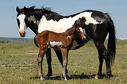

- Le pie :
La tête est majoritairement colorée et les membres souvent blancs.L’orientation des plages blanches est en général verticale.Il existe au moins une plage blanche sur la ligne du dessus.Le contour des plages blanches est net et régulier.
 - Le pie :
La tête est majoritairement blanche et les membres souvent colorés.L’orientation des plages blanches est en général horizontale.Il n’existe pas de plage blanche sur la ligne du dessus.Le contour des plages blanches est irrégulier et flou.
Le cheval est quasiment blanc avec quelques plages colorées (qui déterminent la robe de base)sur les flancs, les grassets, le haut de la tête et/ou la base de la queue.
La tête, les membres, le ventre sont blancs. Le contour des plages blanches est net et régulier.
La tête est majoritairement blanche. Le contour des plages blanches est très mélangé, très déchiqueté et très irrégulier.